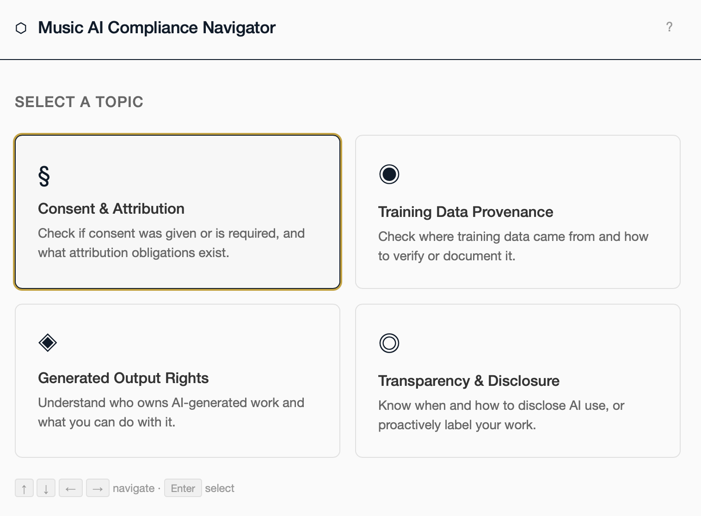

Senior Product Designer · Berlin
Petra Kühnle
First and sole designer at Valispace, a data-rich requirements and systems engineering platform for satellite, aircraft and launch vehicle teams.
The features are in the Requirements & Systems Portal of Altium 365 today. I built the practice from zero and hired my successor. What colleagues say. Before that, four years at Apple, in daily contact with users and deciding whether a problem was a bug or the interface.
01Shipped work
How I discovered, validated and designed with a focus on user needs:
End to end, from discovery and usability testing to hi-fi design and iteration after launch. An aerospace company signed a six-figure development contract on the Figma files and user stories.
Valispace, 2021
Master–Follower
A reusable pattern for requirements shared across projects: linked values that update downstream. Validated with internal and external experts. A backend developer later told me improvements were easy to implement because the logic was mapped out well.
Valispace, 2021
Assignment Verification Matrix
Requirement-to-test traceability in one view, showing what is verified and what is missing. I set clear objectives with the team, then ran research and prototype testing with systems engineers to find where traceability breaks down.

Valispace, 2021
Review Center
Planning and progress across all reviews, for three user profiles: moderator, reviewer, approver. I designed the flow from setup through rating to sign-off, with regulatory traceability.

Independent, 2025 to 2026
Navigator
An EU AI Act compliance tool that makes legal requirements usable for musicians. Concept and AI-assisted design and code prototype.

Documentation links open the official Altium 365 docs.
02UX Founding Work
How I introduced UX to an engineering-led startup
Valispace, 2021 to 2023, as the company grew from 20 to 50 people.
Design system foundations
Set the design principles across product, API docs and marketing. Used tracked CPO/PM feedback in Jira to make the business case for design system foundations.
Show, don't tell
Introduced user interviews, UX methodology and Figma prototyping in a company that had none. Founded a cross-functional UX Guild for designers and developers.
From UX to Product
Promoted onto the new product team with the CTO, CPO, PMs and dev leads. Mentored a UX intern, drafted the senior role and led the hire of a senior designer, still at Altium today.
Owning systemic problems
Took ownership of systemic problems no one had framed yet, and worked out feature logic with engineering leads and users before it reached development.
03References
"She took the initiative to start a cross-functional UX guild that brought designers and developers together to improve the overall user experience."
"In a very short time she learned a previously unknown field by talking to users and iterating fast with them on mockups and prototypes."
04Background
Product design experience
Navigator, an EU AI Act compliance tool for musicians · System Forge, a SysML v2 graph-modeling tool for systems engineers: mapped what the spec fixes against what it leaves open, set design principles using Norman and Tufte · Berlin (remote)
Sole designer, 20 to 50 employees · designed how engineers work with dense, interlinked data · Lisbon and Bremen
Adjacent experience
Coaching autistic adults on technology and digital access · Berlin
Usability and accessibility of a solar-sales website · Berlin
Promoted twice, Tier 1 to Tier 4 · separating UX issues from bugs · Cork
Skills
End-to-end product design · UX research & usability testing · Jobs-to-be-done · Interaction design · Data-rich applications · Hi-fi prototyping (Figma) · Design system foundations · Stakeholder alignment · Accessibility (WCAG) · Reusable components & patterns · HTML · CSS · JS (core concepts) · Python · AI-assisted design & prototyping
Recognition
2026, Navigator · Mozilla Fellowship, nominated (through round 1)
2022, Hack&Con · Most Innovative App Concept (won)
2018, Apple · AppleCare Excellence Award (won)
Education
Certificates
Designing Complex Apps for Specialized Domains (NN/g) · UX/UI Design · UX Research · Digital Media Design & Development (CIT) · Data Analysis & Visualization (StackFuel) · Python (Stanford Code in Place & StackFuel) · Introduction to Web Accessibility (W3Cx)
Languages
German (native) · English (fluent) · Dutch (fluent)05Contact
Open to roles in Berlin or remote.